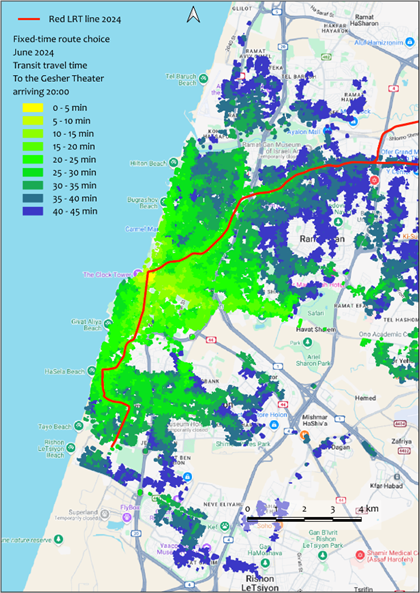
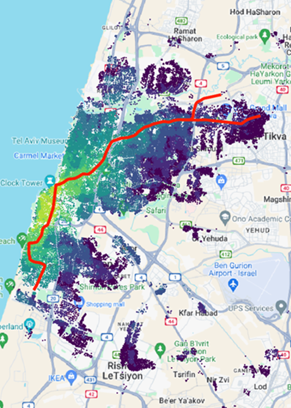
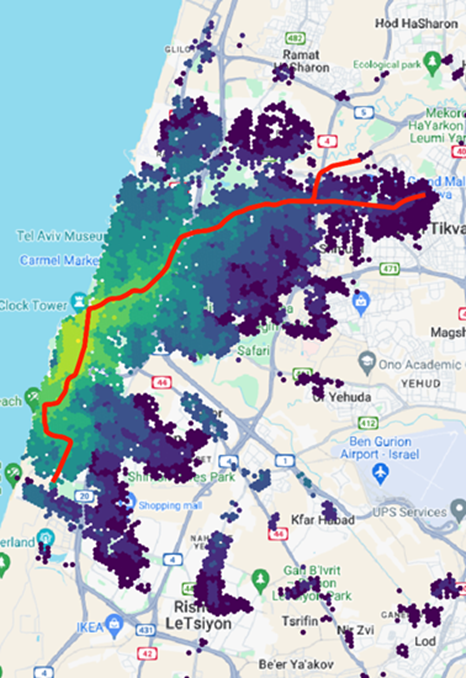
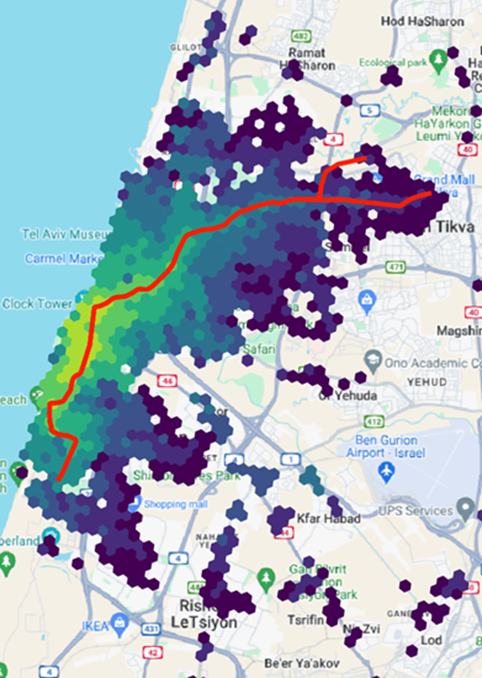
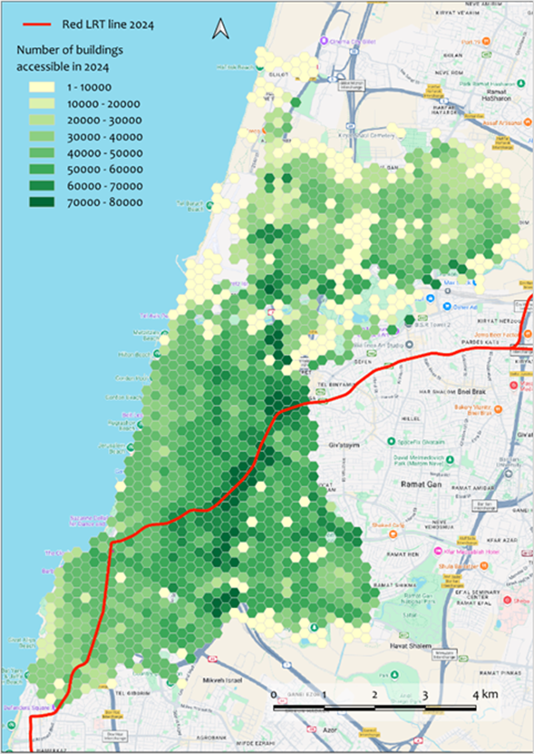
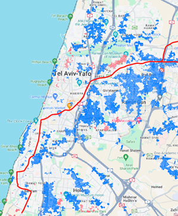

9. Visualization of accessibility maps
The Accessibility Calculator automatically generates thematic maps to visualize the major results of every computed scenario. For Service area maps, these outputs represent travel times. For Cumulative number of opportunities maps, the plugin generates a map showing the number of buildings accessible in the maximum travel time, alongside maps detailing the number of opportunities accumulated in maximum travel time for each user-selected attribute. The layer for visualization must be selected by the user and match the content of two compared layers: If both layers are buildings then it’s layer of Voronoi polygons. If compared layers are based on hexagons, this is the layer of the hexagons.
9.1. The style of presentation
The default map styling employs a Graduated renderer. The interval between minimum and maximum accessibility is divided into specific bins depending on the analysis type:
Service area maps: The interval [0, Maximum travel time] is divided into constant 5-minute bins.
Cumulative number of opportunities maps: The interval is divided according to the specific number of bins set by the user during the setup of the Result #1 and Result #2 computations. The plugin reads this parameter directly from the scenario’s log file.
Compare accessibility maps: The [MIN, MAX] interval of the calculated comparison measure is divided into deciles.
Default color palettes for these visualizations are bundled with the Accessibility Calculator plugin and are featured throughout the examples in this tutorial. While the plugin generates the underlying thematic map, the user remains responsible for finalizing the cartographic design using the QGIS Print Layout feature.
Note
We recommend creating a standard QGIS layout template in advance, so you are always prepared to cleanly present your accessibility maps.
The maps below (Figure 1) present the exact same accessibility results visualized across different layers: the building Voronoi polygons, and hexagons with sides of 100, 200, and 400 m.

a

b

c

d
Figure 1. FROM-accessibility for the Gesher Theater in Yafo at 22:30 (after a performance concludes). Calculated using the Transit accessibility → Service area maps → Fixed-time departure FROM option. Visualized with building Voronoi polygons (a), and 100m (b), 200m (c), and 400m (d) hexagons.
The map in Figure 2 displays the cumulative opportunities for Tel Aviv in terms of the total number of accessible buildings, utilizing a 200m hexagon grid that covers the built-up areas of the city.

Figure 2. Transit accessibility → Cumulative Opportunities maps → Fixed time departure FROM-accessibility map. This presents the number of buildings accessible within 45 minutes from every building in Tel Aviv, utilizing the 2024 transit network (which includes the Red LRT line).
9.2. Visualization of results of comparison between accessibility maps
Figure 3 illustrates the comparison between two TO-accessibility scenarios for the Yafo Gesher Theater, timed for the beginning of a performance at 20:00. The first scenario is computed using the 2018 transit network (before the Red LRT line was established in the Tel Aviv Metropolitan Area), while the second uses the 2024 network (after the line became operational). In 2024, accessibility to distant buildings along the northeastern segment of the LRT line increased significantly. Conversely, accessibility to buildings south and west of the LRT line decreased (Figure 3a) due to the cancellation of several intersecting bus routes. Overall, the Gesher Theater became accessible within 45 minutes from many additional buildings in 2024. Very few buildings that were accessible in 2018 lost their 45-minute access in 2024 despite the bus line cancellations (Figure 3b).


Figure 3. The output of the Compare accessibility maps → Service Areas tool, comparing two TO-accessibility transit maps for the Gesher Theater in Yafo before and after the Red LRT line was established. Panel (a) shows the relative difference between the two maps, while panel (b) highlights buildings that are accessible within 45 minutes in only one of the two networks. The building Voronoi polygon layer is used for visualization, with a maximum travel time threshold of 45 minutes.
For more examples of visualization, please see here.